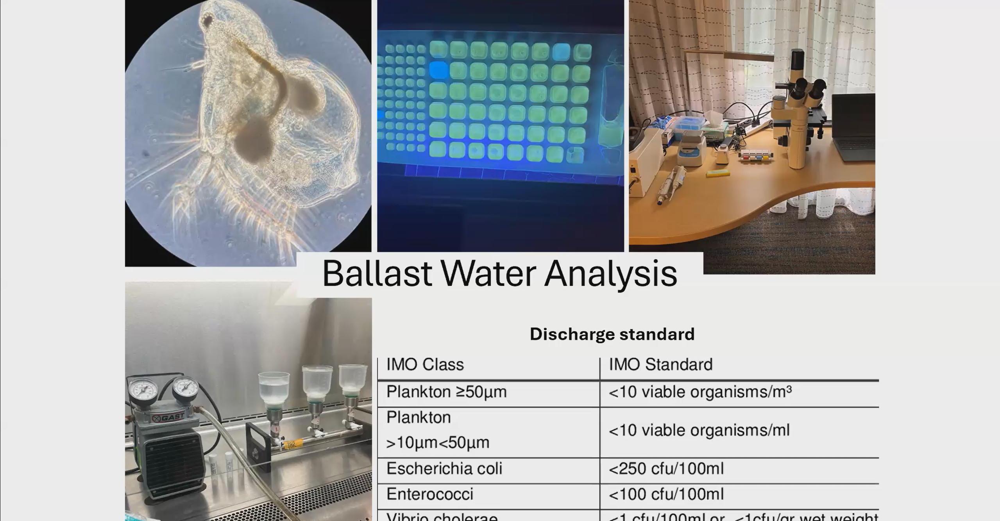
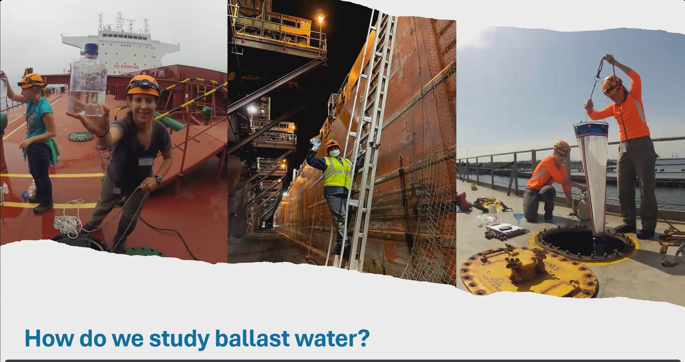

Hitchhiker's Guide to Marine Invasions
Tuesday, March 17, 2025, Online (Zoom):
Presenter: Dr. Jenny Carney-Zollars
The talk about Marine Hitchhikers was very interesting. She started out by introducing SERC and explaining how they explore creatures moving across the world and invasive species. Then she went on to talk about how the terms non-native and invasive are different, non-native species are nondestructive to the environment but becomes invasive once it causes harm to the environment. Dr. Carney-Zollars then continued to explain how species move about the world. She explained that species tend to move with shipping in two ways, by attaching themselves to the hulls of ships or living in the ballast water of a ship. Ballast water is water pumped onboard to maintain stability for tall ships. Then she went on to explain how the US has been attempting to regulate Ballast Water. They carefully track where the water is going and where it came from and that allows them to track ballast activity in real time. Next she explains some techniques that can be used to mitigate the effects of ballast water hauling. There are two main approaches, one is to dump coastal ballast tanks into the middle of the ocean so that the coastal species die from a change in environment. The other approach is to use onboard technology and filtering to kill everything onboard so that nothing living is discharged. Finally she sums up the progress in the field by explaining that people have shifted from not really paying attention to the issue at all to having complicated onboard treatment systems. She finally explains how difficult the process is to collect samples but is hopeful because recent data has shown great improvement in mitigating the problem.
I found Dr. Carney-Zollars’ talk to be very interesting and informative. I knew beforehand that some ships need to take on water to keep themselves balanced when they have dropped off their cargo but I never considered the effects that this might have on the environment in the places they are dropping off the water. She made a very convincing argument that this is an important issue that everyone should be aware of and made it clear the negative effects that ignoring this problem can have worldwide. She explained that species that now bother us in Maryland like the Snakehead fish can be transported this way because the water picked up can have eggs in it and then suddenly a fish population has been moved across the world. She also was very convincing in her argumentation that more needs to be done about the issue, she expressed that even when implementing both strategies she talked about things that can still slip through the cracks and that can still relocate species. She also explained very well how difficult it is to collect data on this issue and that many shipping companies just don’t care. This emphasizes her point that a lot more needs to be done and that with more governmental support she and her team can get more done and have more of an impact. Her explanation of the national resources made available was very helpful and explaining the formation of the National Ballast Information Clearinghouse helped to support her points that some things are being done to mitigate the issue but more can still be done. The argument that more strongly enforced mandatory compliance would help mitigate the issue is made much stronger by stats she shares about decreasing the number of organisms moved across the world. All together her presentation was very compelling and informative about Ballast Water and the negative effects it can have on the environment.
Before attending this meeting I only knew that Ballast water existed and was essential to shipping but I had no idea that it could have such a negative impact on the environment. Her presentation was very quick to convince me that this is indeed a very destructive environmental force that can really hurt the environment. I knew that some species would attach themselves to the outside of ships and would stow away that way but I thought the impacts of that would be minimal but she explained that with the sheer number of ships that move things all over the world every day this is a significant issue. She explained that shipping volume has only increased over time and that if we don’t collectively step up our mitigation efforts then the effects will only become even more pronounced and will cause more environmental harm. Her talk was very effective in quickly bringing the audience up to speed with the entire situation and explaining how she and her team have been working to solve the problem. All together I learned a lot about commercial shipping and ecological conservation from her presentation and it was certainly convincing that more time needs to be put into this and more government action needs to be taken.

A picture of slides from the event.

A picture of the slides from the event.